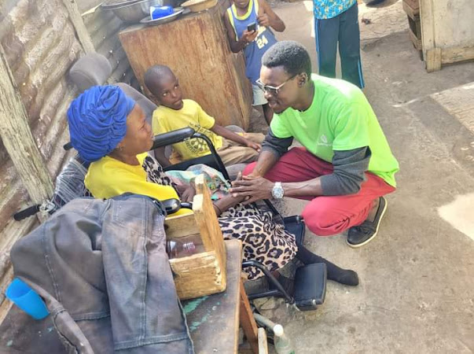
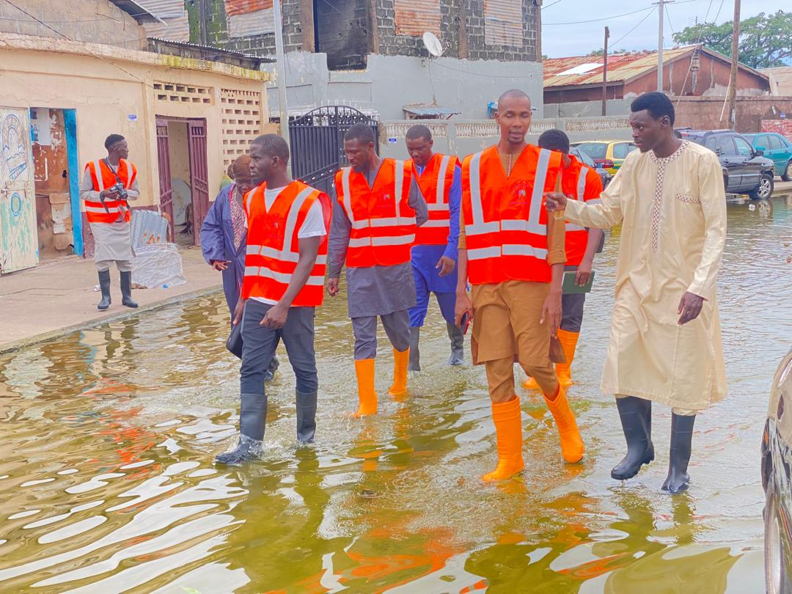
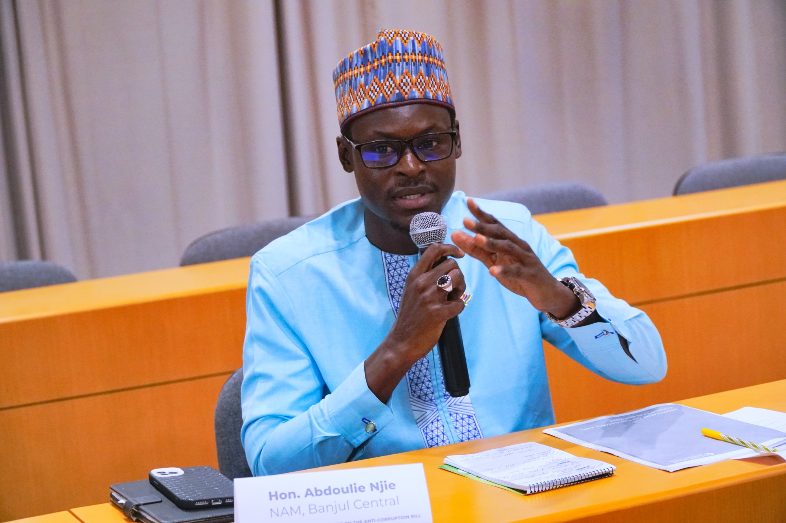
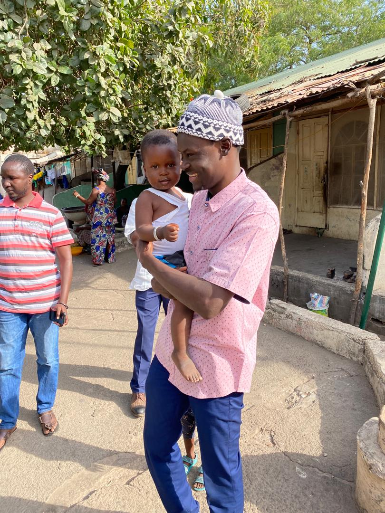

NAM, Banjul Central · Andandorr Movement
"Andandorr" — togetherness in Wolof. A movement dedicated to youth political representation, national unity, and meaningful development across The Gambia.
Driven by integrity, inclusivity, and accountability — the Andandorr Movement is a force for positive, lasting change across every community in The Gambia.
We champion the active participation of young people in political processes, believing youth voices are vital for shaping a more inclusive and representative democracy.
We build bridges between diverse communities across The Gambia, fostering mutual understanding and creating a harmonious society where all voices are heard and valued.
We pursue development that genuinely improves lives — expanding access to education, healthcare, economic opportunity, and the full protection of human rights.



The Andandorr Movement was established in Banjul in February 2022 as a dynamic, youth-led initiative dedicated to advocacy, representation, and development.
Our name — "Andandorr" — means togetherness in Wolof, a cornerstone of everything we do. We exist to ensure that youth voices are heard in the political landscape of The Gambia and beyond.
To empower youth voices and ensure they are heard in the political landscape of Gambia and beyond — creating a society where national unity and meaningful development become our shared reality.
Mission Statement · Andandorr Movement · Est. 2022

We prioritize local communities and believe that solutions to our most pressing challenges often come from within. By empowering communities to lead their own development, we create sustainable, lasting change.
Our approach is holistic — addressing not just political representation, but the broader social and economic factors that shape our communities. We listen to diverse voices and create space for everyone to contribute to our shared future.
Connect With UsCommentary, analysis, and statements from Hon. Abdoulie Njai on governance, youth leadership, and Gambian policy.
Since his election to the National Assembly in 2022 as one of The Gambia's youngest ever MPs, Hon. Abdoulie Njai has built a record of bold legislation, regional leadership, and relentless advocacy for the people of Banjul Central.
A vocal champion for the reintroduction of the Anti-Corruption Bill in the National Assembly, Hon. Njai has consistently argued that accountability and transparency are foundational to Gambia's democratic future. His vocal advocacy in plenary sessions has kept this critical legislation in the national conversation.
LegislationHon. Njai championed major amendments to the Rent Bill, pushing for stronger tenant protections and regulatory reform to safeguard the right to affordable housing across urban Gambia, particularly for residents of Banjul facing rising rents.
Housing · Urban PolicyEstablished a dedicated constituency secretariat for Banjul Central — a direct point of contact between residents and their elected representative, ensuring constituents have access to legislative support, welfare assistance, and a voice at the national level.
Constituency ServiceWhen the Office of the President moved to unilaterally take over McCarthy Square from the Banjul City Council in 2025, Hon. Njai issued a formal press statement, cited the Local Government Act, and threatened legal action — defending Banjul's historic civic heart and the principle of local autonomy.
Local Governance · 2025As a member of the Global Parliamentarians on Climate Action and Country Focal Person for Parliamentarians for a Fossil-Free Future, Hon. Njai is driving policy reform through ECOLUM (Ecology and Environmental Luminaries), converting innovative ideas into sustainable environmental impacts across The Gambia.
Climate · EnvironmentCalled for thorough regulatory scrutiny of Starlink's licensing process in The Gambia, raising concerns about spectrum allocation, cybersecurity, data governance, and national security. His position: that innovation and regulatory diligence are not mutually exclusive, and that approvals must carry legitimacy.
Technology Policy · 2026As co-founder of the Unity Foundation, Hon. Njai has led food distributions, Medicare provisions, borehole projects, blood donation drives, and orphan assistance across Greater Banjul and rural Gambia. During The Gambia's 2016 political crisis, he remained in-country and mobilised resources for citizens stranded at the border.
Humanitarian · Civil SocietyJoin us in advocating for change and participating in our activities. Together, we can create a lasting impact across The Gambia.